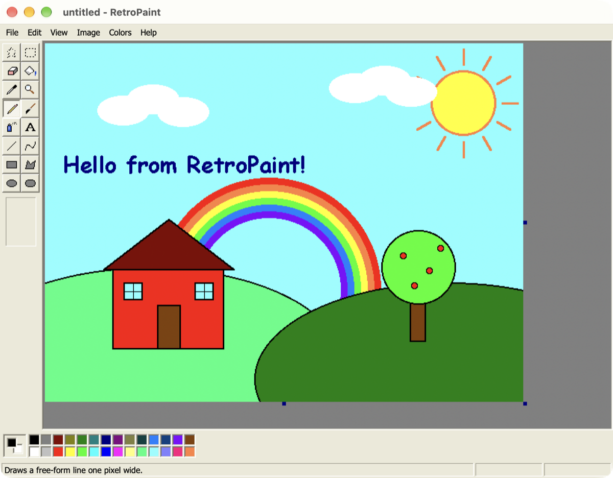
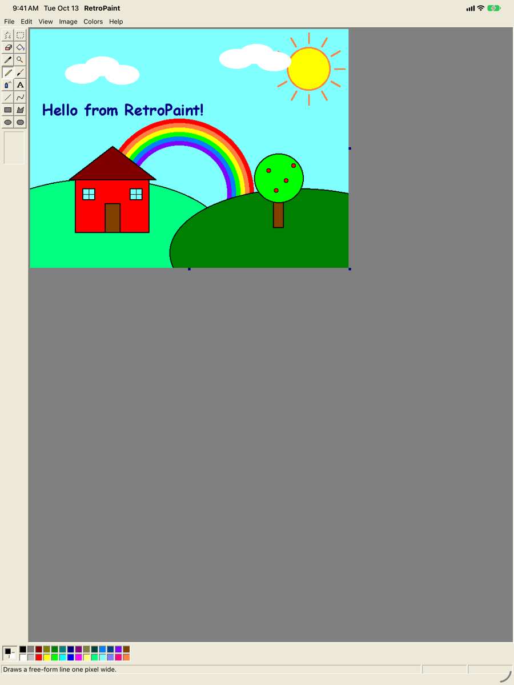
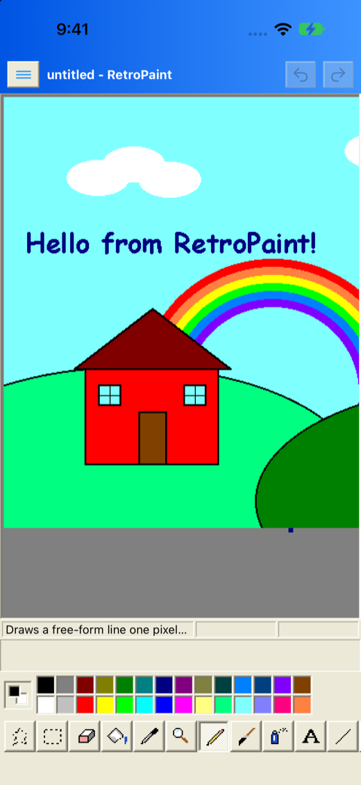

RetroPaint
For Mac · iPad · iPhone
RetroPaint
The classic bitmap editor you grew up with — pencils, paint buckets, spray cans and all — rebuilt from scratch as a native app for Apple devices.
Mac: universal app. On first launch, right-click RetroPaint and choose Open (not notarized yet). iPhone & iPad: install the .ipa with AltStore or Sideloadly.
- 16 classic tools
- 28 palette colors
- 0 anti-aliasing
- 100% pixels
Tip: windows can be dragged by their title bars. Double-click the desktop icons to open more.



- All 16 classic toolsFree-form & rectangle select, eraser, fill, color picker, magnifier, pencil, brush, airbrush, text, line, curve, rectangle, polygon, ellipse and rounded rectangle.
- The 28-color paletteLeft click for foreground, right click (or long-press) for background. Double-click a swatch to define your own color.
- Type right on the canvasDrag a text box, type, move it and resize it — with a floating Fonts toolbar for font, size, bold, italic and underline.
- Image menu classicsFlip/Rotate, Stretch/Skew, Invert Colors, Attributes and Clear Image — on the whole picture or just a selection.
- Pixel-perfectNo smoothing, no anti-aliasing. Zoom up to 800% with a pixel grid and a thumbnail window.
- Real filesOpen and save PNG, BMP, JPEG, GIF and TIFF. Copy and paste with other apps, print, and share.
- Native on every screenBuilt in SwiftUI with a shared drawing engine. Same app on Mac, iPad and iPhone.
Mac: universal app. On first launch, right-click RetroPaint and choose Open (not notarized yet). iPhone & iPad: install the .ipa with AltStore or Sideloadly.
Or build it yourself — RetroPaint is open source:
git clone https://github.com/harkhowalia-1/RetroPaint.git
cd RetroPaint
brew install xcodegen
xcodegen generate
open RetroPaint.xcodeprojPick the RetroPaint scheme, choose My Mac, an iPad or an iPhone, and press ⌘R.
Requires macOS 14 / iOS 17 or later. To run on a physical device, select your Apple developer team under Signing.
RetroPaint Version 1.0
A love letter to the bitmap editors of the early 2000s, written from scratch in Swift.
RetroPaint is an independent project and is not affiliated with or endorsed by Microsoft. Windows and Paint are trademarks of Microsoft Corporation.